1. 테스트의 개념과 분류 (원본 p.4-77)
가. 소프트웨어 테스트의 정의와 원리
소프트웨어 테스트란 노출되지 않고 숨어있는 결함(Fault)을 찾기 위해 소프트웨어를 작동시키는 일련의 행위와 절차로, 오류 발견을 목적으로 프로그램을 실행하여 품질을 평가하는 과정이다. 성공적인 테스트란 무결점을 증명하는 것이 아니라 결함을 찾아내는 데 있으며, 테스트 케이스의 선정과 계획 수립의 품질에 따라 결과가 크게 좌우된다. 또한 개발자는 원칙적으로 자신이 작성한 프로그램을 직접 테스트하지 않는다는 원칙(마이어의 법칙)이 널리 통용된다.
| 구분 | 내용 |
|---|---|
| 테스트의 목적 | 잠재적 오류와 결함의 발견, 요구사항의 준수 여부(기능/성능) 확인, 소프트웨어 신뢰도의 평가와 예측, 고객 요구 만족도 향상 |
| 테스트의 필요성 | Defect-free 소프트웨어 개발의 어려움, 테스트에 의한 검증 방식의 경제성, 실증에 의한 기능의 확인 |
나. 테스트 대상 정보와 실행 여부에 따른 분류
| 구분 | 유형 | 특징 |
|---|---|---|
| 테스트 정보 획득 대상 | 화이트박스 테스트 | 프로그램 내부 로직을 보면서 하는 구조 테스트. 논리적 복잡도를 측정한 후 수행 경로들의 집합을 정의(구조 테스트)하거나 루프 구조에 국한해 실시(루프 테스트)한다. |
| 블랙박스 테스트 | 프로그램 외부 명세를 보면서 하는 기능 테스트. 동등분할·경계값 분석·원인-결과 그래프·오류예측기법 등을 활용하는 Data-driven Test이다. | |
| 프로그램 실행 여부 | 동적 테스트 | 프로그램 실행을 요구하는 테스트로, 화이트박스·블랙박스 테스트가 모두 해당한다. |
| 정적 테스트 | 프로그램을 실행하지 않고 구조를 분석해 논리성을 검증한다. 코드검사(체크리스트 기반의 공식적 검사, Fagan Inspection)와 워크스루(체크리스트 없는 비공식적 검사)가 대표적이다. | |
| 테스트에 대한 시각 | 검증(Verification) | 과정을 테스트한다 — "Are we building the product right?" 올바른 방법으로 제품을 생산하고 있는지 검증한다. |
| 확인(Validation) | 결과를 테스트한다 — "Are we building the right product?" 만들어진 제품이 사용자 요구를 제대로 충족하는지 확인한다. |
| 구분 | 검증(Verification) | 확인(Validation) |
|---|---|---|
| 정의 | 개발자 시각에서 소프트웨어가 명세화된 기능을 올바로 수행하는지 확인(Build the product right) | 사용자 시각에서 올바른 소프트웨어가 개발되었는지 입증(Build the right product) |
| 활동 대상 | 제품 생산 과정 | 생산된 제품 자체 |
| 활동 기간 | 개발의 각 단계 | 시작과 종료 단계 |
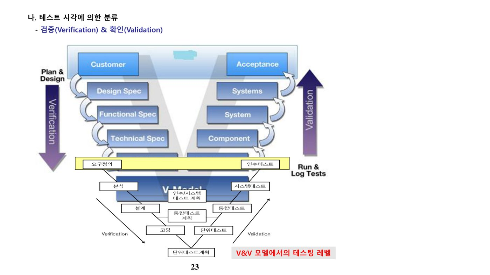
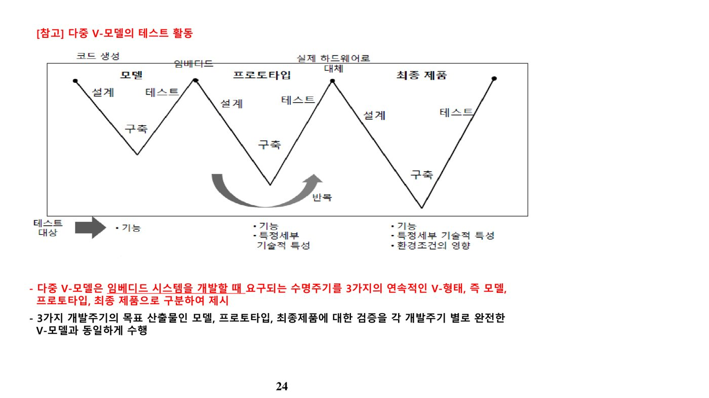
다. 테스트 단계·목적별 분류
| 구분 | 유형 | 특징 |
|---|---|---|
| 테스트 단계 | 단위 테스트 | 모듈의 독립성 평가, 화이트박스 테스트, 개발자가 수행 |
| 통합 테스트 | 모듈 간 인터페이스 테스트(결함 테스트). Driver·Stub을 통해 수행 | |
| 시스템 테스트 | 전체 시스템의 기능 수행 테스트(비기능 - 회복, 안전, 강도, 성능, 구조)★ | |
| 인수 테스트 | 사용자 요구사항 만족도 평가(확인, 알파테스트, 베타테스트)★ | |
| 설치 테스트 | 사용자 환경에서 수행하는 설치 관련 테스트 | |
| 테스트 목적 | 회복 테스트(Recovery) | 고의적 실패를 유도해 복구 능력을 검증 |
| 안전 테스트(Security) | 불법 소프트웨어 검출·제거, 취약점·악성코드 진단 | |
| 강도 테스트(Stress) | 과다 정보량을 부과해 한계를 검증 | |
| 성능 테스트(Performance) | 응답시간, 처리량, 속도 검증 | |
| 구조 테스트(Structure) | 내부 논리 경로, 복잡도 평가 | |
| 회귀 테스트 | 변경·교정이 새로운 오류를 발생시키지 않았는지 확인 | |
| 병행 테스트 | 변경 시스템과 기존 시스템에 동일 데이터를 넣어 결과 비교 |
| 단계 | 테스트 방법 |
|---|---|
| 단위 테스트 | 구현 단계에서 개발자가 수행. 개별 모듈의 단독 실행 환경이 필요 |
| 통합 테스트 | 모듈을 결합해 하나의 시스템으로 구성할 때 수행★ — 빅뱅 통합(한꺼번에 결합, 원인 규명 어려움) / 하향식 통합(다수의 스텁 필요) / 상향식 통합(테스트 드라이버 필요) / 샌드위치 통합(상·하향 결합 방식, 권장) |
| 시스템 테스트 | 통합된 모듈에 대한 비기능적 테스트 — 신뢰성, 견고성, 성능, 안전성 등 |
| 인수 테스트 | 사용자 만족 여부를 확인하는 품질 테스트 — 알파(개발자 환경, 개발자 통제 하 사용자 수행) / 베타(일정 수 사용자가 실사용 환경에서 테스트, 피드백) / 감마(베타 이후 다수 사용자 대상) |
| 설치 테스트 | 시스템 설치 시 수행, H/W 체계·S/W 연결성 등을 확인 |
라. 테스트 기법(방법)에 따른 분류
| 기법 유형 | 설명 | 키워드 |
|---|---|---|
| Record and Replay | 타겟 시스템(주로 임베디드 SW)에서 발생하는 사용자 입력·외부 이벤트를 녹화해 테스트 스크립트로 구성하고 재수행하여 결과를 확인하는 이벤트 기반 테스팅 | 임베디드 SW |
| 테스트 오라클(Test Oracle) | 테스트 수행 결과의 참/거짓을 판단하기 위해 미리 정의된 참 값을 대입·비교하는 기법. 참 오라클(모든 입력에 대한 결과 검출) / 샘플링 오라클(일부 결과만 제공) / 휴리스틱 오라클(특정 입력만 샘플링해 단점 보완)로 구분된다. | 참·샘플링·휴리스틱 오라클 |
| 리스크 기반 테스트 | 비즈니스·기술상의 위험을 정량적으로 측정해 우선순위가 높은 영역에 테스팅 자원을 집중하는 전략 | 발생가능성, 영향도 |
| Pairwise Testing | 대부분의 결함이 2개 요소의 상호작용에서 발생한다는 전제로, 각 값이 다른 파라미터 값과 최소 한 번씩 조합되는 테스트 케이스를 구성 | 2-factor 조합 최소화 |
| 준거성 테스트(Compliance Test) | 내부 통제가 문서화 자료와 경영자의 의도대로 이행되는지 판단하는 감사 테스트 — 프로세스 준수 여부(과정심사) 확인 | 위험 평가, CMMi/SPICE/ITIL |
| 실증성 테스트(Substantive Test) | 활동·거래의 완전성·정확성·존재성에 대한 감사 증거를 수집하기 위한 세부 테스트 또는 분석적 조사 — V&V, 성능 감사 | 정보보호 감사, 증거 수집 |
| 뮤테이션 테스트 | 정상 프로그램에 의도적으로 소스코드를 변형(뮤턴트 삽입)한 뒤 동일 입력으로 다른 결과가 나오는 테스트케이스를 찾아, 테스트케이스의 적합성과 신뢰성을 평가하는 기법 | Mutant |
| 회귀 시험(Regression Test) | 새 결함 발생에 대비해 기존에 실시했던 테스트 사례 일부 또는 전체를 재실시 | 변경 영향 확인 |
| 빅뱅 테스트(Big-Bang Test) | 모듈 간 상호 인터페이스를 고려하지 않고 한꺼번에 결합해 테스트 | 원인 규명 어려움 |
마. 명세기반(블랙박스) 테스트 기법
명세기반 테스트는 요구사항 분석서·설계서 등 주어진 명세를 바탕으로 테스트 케이스를 도출하는 기법으로, 기능 위주·데이터 기반·I/O 기반의 테스트를 지향한다.
| 유형 | 설명 | 특징 |
|---|---|---|
| 동등분할(Equivalence Partitioning) | 결과가 동일한 입력값들을 하나의 등가집합으로 묶고, 집합 대표값을 선택해 테스트 케이스를 선정 | 상호 독립적 등가집합 |
| 경계값 분석(Boundary Value Analysis) | 동등분할의 경계에서 결함 발견 확률이 높다는 점에 착안해 유효·비유효 경계값을 함께 고려 | 모든 테스트 레벨에 적용, 결함 발견율 높음 |
| 결정(의사결정) 테이블 테스팅 | 입력 조건과 결과를 참/거짓 조합으로 표현한 결정테이블을 만들고 이를 기반으로 테스트 케이스를 작성 | 조건·상황 기반 비즈니스 규칙 명세화 |
| 상태전이 테스팅 | 시스템의 이전 상태, 상태 간 전이, 전이를 유발하는 이벤트·입력값을 정의한 전이테이블을 기반으로 설계 | 전이트리, 임베디드 시스템에 적합 |
| 유스케이스 테스팅 | 유스케이스·비즈니스 시나리오를 기반으로 액터와 시스템의 상호작용, 기본흐름·대체흐름을 명세화 | 전제조건·후속조건, 프로세스 흐름 |
| 분류 트리 기법(Classification Tree Method) | 소프트웨어 전체 또는 일부를 트리 구조로 분석·표현하여 테스트 케이스를 도출 | 복잡도 높은 SW에 적합, 시각화 |
| 오류 예측 기법(Error Guessing) | 각 시험 기법이 놓치기 쉬운 오류를 감각과 경험으로 찾아내는 기법(예: 입력 없이 Enter, 문법 위반 입력 등) | 경험 기반 |
| 원인-결과 그래프 기법(Cause-Effect Graphing) | 동등분할·경계값 분석이 입력 조합의 복잡성을 완전히 반영하지 못하는 한계를 보완하기 위해, 입력 데이터 간 관계가 출력에 미치는 영향을 체계적으로 분석해 시험사례를 도출 | 입력 조합의 체계적 분석 |
바. 구조기반(화이트박스) 테스트 기법
구조기반 테스트는 소프트웨어의 코드나 설계 등 내부 구조를 보여주는 정보로부터 테스트 케이스를 도출하는 기법으로, White Box Test와 동일한 개념이다.
- 제어구조 시험(Control Structure Testing) — McCabe가 제안한 대표적 화이트박스 기법. 프로그램의 논리적 복잡도를 측정한 후 이 척도에 따라 수행시킬 기본 경로들의 집합을 정의한다. 구조적 프로그램은 순차형(SEQUENCE), 선택형(IF-THEN-ELSE), 반복형(DO-WHILE)의 3가지 제어 구조 조합으로 모든 논리가 기술되며, 이를 테스트 대상으로 삼는다.
- 루프 시험(Loop Testing) — 프로그램의 루프 구조에 국한해 루프의 계속·종료 여부를 결정하는 명령문을 검사하는 기법. 루프 유형은 단순 루프, 중첩 루프, 연결 루프, 비구조적 루프로 구분된다.(암기법: 화제루)
사. 경험기반 테스트 기법과 탐색적 테스팅
| 기법 유형 | 설명 | 키워드 |
|---|---|---|
| 탐색적 테스트(Exploratory Testing) | 테스트 목표와 테스트 차터(Test Charter)를 기반으로 정해진 시간 내에 테스트 설계·수행·기록·학습을 병행하는 테스트 기법 | Formal 기법의 보완, Heuristic 기반 |
| 오류 추정(Error Guessing) | 가능한 결함을 목록화하고 이를 발견하기 위한 케이스를 작성. 상식·경험·기존 데이터를 통해 결함을 예상 | 기능/시스템 요소 체크리스트 |
| 체크리스트 기반 테스트 | 문서 기반 테스트 케이스 작성 시에도 체크리스트의 경험과 노하우를 반영 | 일반적 경험, 노하우 |
| 분류 트리 기법 | 트리 구조로 시각화하여 테스트 케이스를 설계 | 복잡도 높은 SW에 적합 |
탐색적 테스팅은 제품 정보 습득과 테스트 설계·실행을 동시에 수행하는 경험 기반 테스트 접근법으로, 결함 집중의 원리를 활용하고 프로세스·도구보다 사람(지적 능력, 몰입)을 중심에 둔다. 문서를 최소화하며 정해진 시간(Time-Boxing) 내에 몰입하고, 세션 종료 후 회고(Debriefing)를 통해 경험과 스킬을 공유한다.
| 구성요소 | 설명 |
|---|---|
| 테스트 차터(Test Charter) | 테스트 미션·대상·목적·범위를 명시한 테스트 명령지 |
| 시간 제한(Time Boxing) | 세션당 몰입 시간을 지정(예: 60분/90분/120분)해 몰입 여건을 조성 |
| 세션 시트(Session Sheet) | 아이디어·결과·결함을 기록하는 검토 가능한 결과물 |
| 요약보고(Debriefing) | 테스트 수행 이력과 경험을 주기적으로 공유 |
| 구분 | 테스트케이스 기반 테스팅 | 탐색적 테스팅 |
|---|---|---|
| 정의 | 입력값·예상결과·실행조건을 명세화한 문서 기반의 공식적 테스트 | 테스터의 경험(Heuristic)에 기반한 직관적 테스팅 |
| 구성요소 | 테스트 계획서, 테스트케이스, 테스트 시나리오, 결과서 | 테스트 차터, 타임박싱, 테스트 노트, 요약보고 |
| 설계와 수행 | 먼저 설계·기록되고 다른 테스터도 수행 가능 | 설계와 수행이 동시에 진행, 반드시 기록되지는 않음 |
| 문서화 비중 | 공식화·완전한 설계를 위해 문서화 비중이 큼 | 문서화를 줄이고 테스터의 지적 능력에 의존해 결함 발견율 편차가 큼 |
아. 테스트 커버리지
커버리지(Coverage)는 테스트가 얼마나 충분한지를 나타내는 지표로, 코드 커버리지·패스 커버리지 등으로 활용된다. 커버리지 기준은 아래와 같이 단계적으로 강화된다.
| 용어 | 설명 |
|---|---|
| Statement Coverage(구문 커버리지) | 기술된 문장(Statement)이 최소 1회 수행되는지 검증. Boolean 식의 경우 if의 참 조건만 수행해도 만족되므로 가장 약한 커버리지 기준이다. |
| Decision Coverage(결정 커버리지) | 전체 조건식에서 결과 포인트(Decision Point)가 최소 한 번은 참/거짓 각각 나오도록 수행하는 커버리지 |
| Condition Coverage(조건 커버리지) | 조건문에서 사용되는 개별 조건이 결과와 상관없이 최소 한 번은 참, 한 번은 거짓이 되도록 수행 |
| Condition/Decision Coverage(조건/결정 커버리지) | 전체 조건식의 결과가 참·거짓 각 한 번, 개별 조건식도 참·거짓 각 한 번을 갖도록 조합 |
| MC/DC(Modified Condition/Decision Coverage) | 각 개별 조건식이 다른 개별 조건식의 영향을 받지 않고 전체 조건식의 결과에 독립적으로 영향을 주도록 하여 조건/결정 커버리지를 향상시킨 기법. 일반적으로 N개의 입력을 가진 결정에서 최소 N+1개의 테스트 케이스가 필요하다. |
| Multiple Condition Coverage(다중 조건 커버리지) | 결정 포인트 내 모든 개별 조건식의 모든 가능한 논리적 조합을 100% 커버(가장 완전하지만 비용이 큰 방법) |
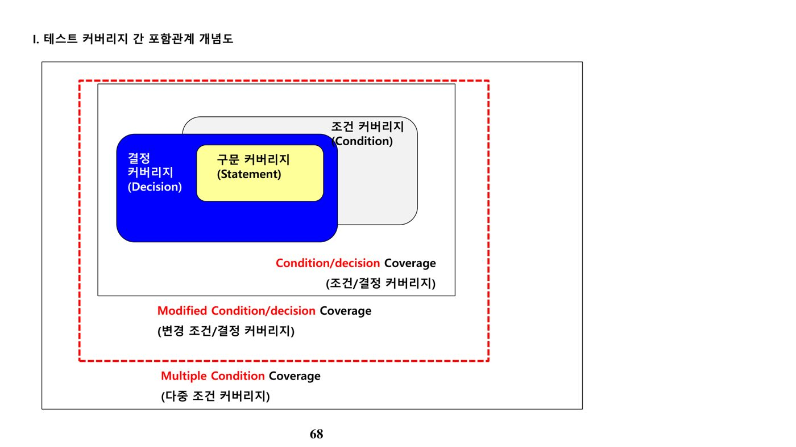
- 조건 커버리지: x>=-2가 참·거짓 각 1회, y<4도 참·거짓 각 1회 나오므로 100%
- 결정 커버리지: 전체 식이 거짓 2회만 나오고 참이 없으므로 50%
- 문장 커버리지: if문과 else문(x=y-5) 2개 문장만 수행되고 x=y*5는 수행되지 않아 2/3 ≈ 66%
자. 성능 테스트
| 성능지표 | 설명 | 단위 | 목표 |
|---|---|---|---|
| 응답 시간(Response Time) | 작업 처리 요청 후 결과를 보여줄 때까지 소요된 시간 | 초 | 낮춤 |
| 시간당 처리량(Throughput) | 단위 시간당 성공적으로 처리한 요청(트랜잭션) 건수 | TPS, OPS | 높임 |
| 자원 사용량(Utilization) | 자원(CPU, 메모리 등) 용량 중 실제 사용 중인 비율 | % | 높임 |
| 효율성(Efficiency) | 시간당 처리량을 자원사용량 또는 비용으로 나눈 값 | %, tpmC | 높임 |
Little's Law는 시스템의 처리 용량을 계산하는 수학적 법칙으로, TPS(초당 트랜잭션 처리 건수) = AU(Active User, 트랜잭션을 발생시키는 사용자 수) ÷ MRT(평균 응답시간)로 표현된다. 이를 통해 시스템 성능·용량의 임계치를 파악하고, 과부하가 예상되는 시스템에 대한 사전 장애 예방 및 튜닝 포인트(서버, DBMS, 미들웨어, 네트워크, Client PC) 분석에 활용한다.
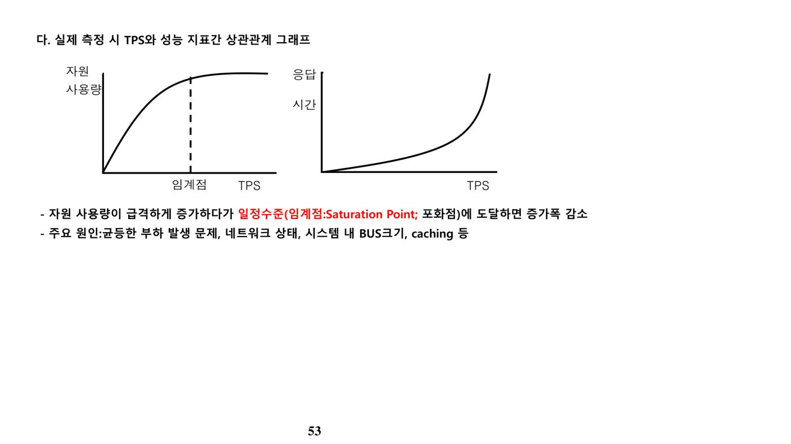
| 성능테스트 유형 | 목적 | 수행 방식 |
|---|---|---|
| 부하(Load) 테스트 | 어플리케이션이 정의된 성능 목표를 만족하는지 확인 | 평상시 및 최대(peak) 부하량에서 응답시간·처리량·자원사용량 등 성능 지표를 측정 |
| 과부하(Stress) 테스트 | 과부하 상황에서 정상 기능이 수행되는지 확인 | 최대치를 초과하는 부하량에서 동기화, 자원 경합, 메모리 누수 문제 발생 여부를 평가 |
| 용량(Capacity) 테스트 | 사용자·데이터 증가 시 필요한 시스템 용량을 확인 | 과거 성능 측정치를 기준으로 필요 시스템 자원 산정 및 확장 전략 수립 |
| 지원 도구 유형 | 세부 유형 | 주요 역할 |
|---|---|---|
| 테스트 관리 지원 도구 | 테스트 관리 도구 | 테스트 관리 협업 환경 지원 |
| Incident 관리 도구 | 결함 할당 및 모니터링 | |
| 요구사항 관리 도구 | 요구사항 작성 및 추적성 모니터링 | |
| 형상 관리 도구 | 테스트웨어 버전 관리 | |
| 테스트 설계 지원 도구 | 테스트 설계 도구 | Test Case 설계 지원 |
| 정적 Testing 지원 도구 | 정적 분석 도구 | 테스트 매트릭스 정보 제공, 룰 기반 위반 사례 검출 |
| 동적 Testing 지원 도구 | 단위 테스트 도구 | 단위 함수 기능 검증 |
| 테스트 실행 도구 | 반복 테스트 자동 수행 | |
| 성능 Testing 도구 | 가상 부하 발생을 통한 성능/부하/스트레스 테스트 | |
| 커버리지 측정 도구 | 코드 레벨 커버리지 측정 | |
| 모니터링/보안 도구 | 메모리 사용량·동시 접속자 등 모니터링, 보안 취약점 검출 |
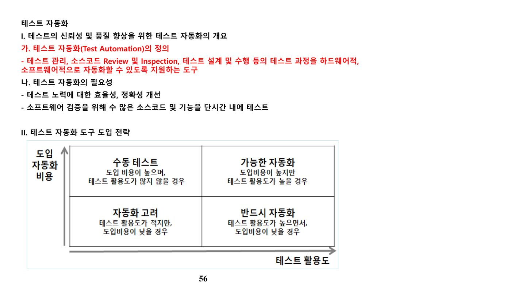
차. Back-to-back Testing
두 개 이상의 다양한 컴포넌트나 시스템을 동일한 입력값으로 실행하여 동일한 결과가 나오는지 확인하고, 불일치가 발생하면 그 원인을 비교 분석하는 테스트 기법이다. 신뢰성이 절대적으로 요구되는 항공기·자동차 분야에서 설계 명세와 구현 결과의 정확성을 체크하는 데 활용되며, ISO 26262 Functional Safety에서는 Unit/Integration/System Testing 수행 시 주요 검증 방법으로 권고한다.
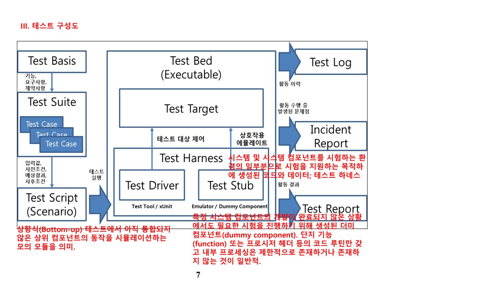
2. PoC와 기타 테스트 유형 (원본 p.78-93)
가. PoC(Proof of Concept)의 개념
| 구분 | 내용 |
|---|---|
| 개념 | 제품·기술·정보시스템 등이 조직의 특수 문제를 해결할 수 있음을 실현·증명하는 과정. 아직 시장에 나오지 않은 신제품의 사전 검증에 사용 |
| 목적 | 신기술·신제품에 대한 사전 검증, 도입 위험 완화 및 사용자 반응 확인 |
| 대상/범위 | 단일 제품 및 솔루션 평가, 출시되지 않은 신제품, 단일 업체 참여 |
| 산출물 | 솔루션·제품 설명서 및 분석서, PoC 계획서·결과서, 제품 도입 타당성 분석 |
나. 소프트웨어 테스트의 기본 원리
| 원리 | 설명 |
|---|---|
| 살충제 패러독스(Pesticide Paradox) | 동일한 테스트 케이스로 동일한 테스트를 반복하면 나중에는 더 이상 새로운 결함을 찾아내지 못함 |
| 오류 부재의 궤변(Absence-errors Fallacy) | 개발된 시스템이 사용자의 필요·기대에 부응하지 못하고 사용성이 낮다면, 결함을 찾아 수정하는 과정 자체가 무의미해짐 |
| 결함 집중(Defect Clustering) | 파레토 법칙에 따라 결함의 20%가 전체 영향의 80%를 차지 |
| 테스트의 조기 시작 | 개발 초기부터 테스트를 시작해야 품질비용을 줄일 수 있음 |
| 완벽한 테스트의 불가능성 | 자원의 한계로 모든 경로·조합을 테스트할 수는 없음 |
다. 인수·특수 목적 테스트 유형
| 유형 | 설명 |
|---|---|
| 알파 테스트(Alpha) | 개발업체 내부 직원 또는 회사와 밀접한 관계를 유지하는 일부 사용자만 참여하는 시험. 개발 환경에서 사용자가 참여해 수행 |
| 베타 테스트(Beta) | 알파테스트를 거친 프로그램을 정식 출시 전에 일정 수의 실사용자가 실제 운영환경에서 테스트 |
| 감마 테스트(Gamma) | 베타 버전 배포 이후 다수의 사용자를 대상으로 하는 테스트로, 인수 테스트의 일종 |
| 스트레스 테스트 | 서버 수용력, 다수 동시 접속 시의 원활한 동작 여부를 점검 |
| 복구 테스트(Recovery) | 고장 발생 시 복구 작동 여부를 테스트 |
| 스모크 테스트(Smoke Testing) | 기본 기능을 점검하는 선행 시험, 정밀검사 전 간편 사전심사 |
| 민감도 테스트(Sensitivity Testing) | 입력변수의 조합, 불안정한 요소에 대한 영향도를 테스트 |
| 슬라이싱 테스트 | 프로그램을 분해하여 테스트하는 방법 |
3. 테스트 프로세스와 표준(IEEE 829 / ISO 29119) (원본 p.94-103)
가. 테스트 문서 표준화 배경
소프트웨어 품질인증 제도 시행과 관련해 S/W 업체의 품질 인식을 고취하고 제품 품질을 높이기 위해, IEEE 829(Standard for Test Documentation)를 수용해 한글화한 표준을 TTA(정보통신기술협회)가 제정하였다. 테스트 계획서는 총 16개 항목으로 목차가 구성되며, 부속 서류로 테스트 설계명세서·테스트 케이스 명세서·테스트 절차 명세서를 갖는다.
| 문서 | 주요 내용 |
|---|---|
| 테스트 설계명세서 | 테스트 대상의 특성 식별, 세부 접근방법 명시, 테스트 식별(케이스 식별자 열거), 성공/실패 판정 기준 명시 |
| 테스트 케이스 명세서 | 테스트 항목·입출력 명세·환경 요건 및 절차의 특정 제약사항을 기술. 입력값·예상 출력값뿐 아니라 값을 입력하고 결과를 관찰·비교하는 방법, 테스트 대상이 실행되는 특수 환경까지 명시한다. |
| 테스트 절차 명세서 | 테스트 수행 단계를 상황기록 → 준비 → 시작 → 진행 → 측정 → 중단 → 재시작 → 중지 → 마감 → 비상 대처상황의 10단계로 정의 |
| 테스트 항목 전달 보고서 | 테스트 대상 시스템의 당초 요구사항·설계에서 벗어난 사항을 기록 |
| 테스트 상황 기록 | 테스트 실행 관련 상세 내용을 시간 순으로 기록 |
| 테스트 사건보고서(결함보고서) | 테스트 실행 중 발생한 사건을 사고보고서 형태로 기록 — 입력값, 예상결과, 실제결과, 예외사항, 발생일시, 수행자 등을 포함(단, 결함 제거를 위한 해결 방안은 필수 항목이 아니다) |
나. 테스트 프로세스의 5단계
| 단계 | 세부단계 | 설명 |
|---|---|---|
| 테스트 계획수립 | 1) 요구사항 수집 2) 계획 작성 3) 계획 검토 | 테스트 목표·대상·범위 선정, 전략·일정·보고 체계를 담은 계획서를 작성하고 정제·확정 |
| 테스트 케이스 설계 | 1) 설계기법 정의 2) 케이스 도출 3) 원시 데이터 수집 | 테스트 종류 및 설계기법을 정의하고 이를 이용해 테스트 케이스를 도출, 원시 데이터를 작성 |
| 테스트 실행 및 측정 | 1) 환경 구축 2) 케이스 실행·측정 | 계획서에 정의된 환경·자원을 설정해 테스트를 실행하고 결과를 측정 |
| 결과분석 및 보고 | 1) 측정결과 분석 2) 결과 보고 | 측정치를 분석하고 결과 분석서를 기반으로 결과 보고서를 작성 |
| 오류추적 및 수정 | 1) 원인 분석 2) 수정 계획 3) 오류 수정 4) 수정 후 검토 | 오류지점을 분석해 우선순위를 정하고 디버깅 도구로 수정한 뒤, 수정 결과의 정합성을 재검토 |
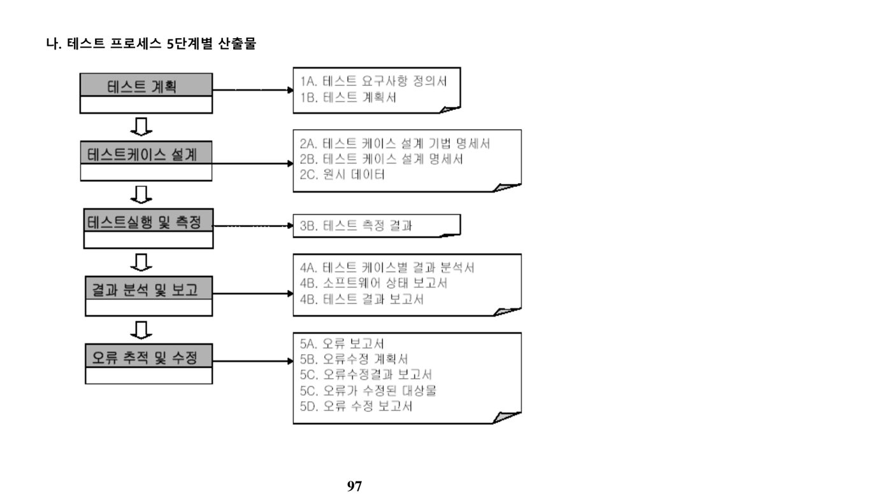
다. ISO/IEC 29119 국제 표준
ISO 29119는 소프트웨어 테스팅 프로세스·산출물을 표준화한 국제표준이다. IEEE 829, IEEE 1008, BS7925-1·2 등 기존 테스팅 표준을 통합해 일관된 기준을 제시하며, 사실상의 표준(De facto standard)이던 ISTQB 체계와 결합해 테스팅 표준 간의 혼잡성을 해소하고 조직의 테스트 수행 수준을 판단하는 객관적 지표(Guarantee Level)를 제공한다.
| 구성(Part) | 내용 |
|---|---|
| Part 1 | 소프트웨어 테스팅 원리와 프로세스의 개요(Concepts & Definitions) |
| Part 2 | ISO/IEC 12207의 테스트 관련 부분 준용, 테스트 프로세스(Processes) |
| Part 3 | 테스트 프로세스 산출물의 문서화 방안(Documentation) |
| Part 4 | 테스트 케이스 설계, 명세 등 상세 테스트 기법(Test Techniques) |
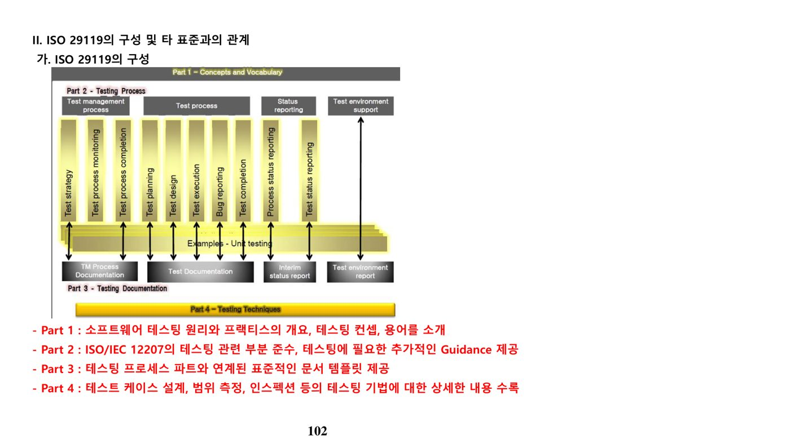
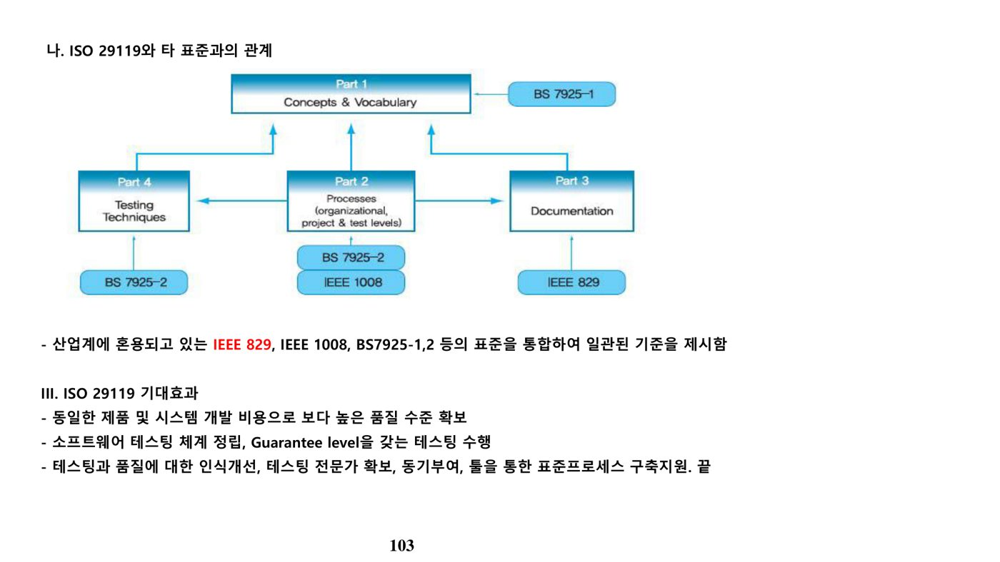
4. Test Case 설계와 정적분석 (원본 p.104-119)
가. 테스트 케이스의 정의와 설계의 중요성
테스트 케이스(Test Case)란 특정 프로그램 경로를 실행해 보거나 특정 요구사항의 준수 여부를 확인하기 위해 개발된 입력값, 실행 조건, 예상 결과의 집합이다. 테스트하려는 시스템이 수행해야 할 액션들로 구성된 일련의 단계를 테스트 프로시저 또는 테스트 스크립트라 부른다. 테스트 케이스 설계가 미흡하면 테스트 오류가 발생하기 쉽고, 직관적으로 테스트를 수행하면 인력·시간이 낭비되므로 설계의 경제성이 중요하다.
나. 커버리지 기준별 최소 테스트케이스 산정 사례
제어 흐름도를 테스트할 때 커버리지 기준에 따라 필요한 최소 테스트케이스 수가 달라진다.
- 문장 검증 기준(Statement Coverage) — 제어 흐름도의 모든 문장을 각각 최소 1회 수행하면 되므로, 대표적인 두 경로만으로도 2개의 테스트케이스로 충분한 경우가 많다.
- 분기 검증 기준(Branch/Decision Coverage) — 모든 분기(마름모 결정 포인트)가 참·거짓을 각 1회 이상 만족해야 하므로 통상 3개 이상의 테스트케이스가 필요하다.
- 경로 검증 기준(Path Coverage) — 모든 논리적 경로를 테스트하므로 가장 많은 테스트케이스를 요구한다. 예를 들어 마름모 분기 2개(i>j 여부, k>0 여부)를 모두 조합하면 최소 4개의 테스트케이스가 필요하다.★
다. IEEE 표준 테스트 산출물
IEEE Standard for Software Test는 계획, 공정, 개발, 운영 및 유지보수 등 모든 소프트웨어 수명주기 프로세스를 지원하기 위한 테스트 프로세스·활동·작업을 정의한다. 테스트 계획 및 절차의 수행 결과 표준 산출물로는 Test Design, Test Case, Test Procedure, Test Log, Level Test Report, Test Report의 작성·사용이 규정된다.
라. 정적 분석 도구와 정적/동적 분석
| 구분 | 설명 |
|---|---|
| 정적 분석(Static Analysis) | 프로그램을 실행하지 않고 소스코드 그 자체의 의미를 분석해 결함을 발견하는 기법 |
| 동적 분석(Dynamic Analysis) | 프로그램을 실행(동작)시켜 그 결과에 수반되는 현상을 분석하는 기법 |
대표적인 정적 코드 분석 도구인 PMD는 사용하지 않는 변수, 비어 있는 catch 블록, 불필요한 객체 생성 등 자바(및 JavaScript, PL/SQL, XML 등)의 잠재적 문제를 검출하는 소스 코드 분석기이다. 정적 분석 도구는 제어 흐름, 데이터 사용, 수행 경로 등을 분석 대상으로 삼으며, 기능 점수(Function Point) 산정과 같은 규모 측정 활동과는 구분된다.
마. 관련 서술형 기출문제
1. 소프트웨어 재사용성을 통해 생산성을 향상시키기 위한 방안을 설계·구현 단계별로 구체적으로 설명하시오. (컨설팅 111회 1교시)
2. IEEE Standard for Software Test에 정의된 테스트 설계 명세서, 테스트 케이스 명세서, 테스트 절차 명세서 각각의 구성 요소를 설명하시오.
5. 모듈화·결합도·응집도 (원본 p.120-143)
가. 모듈화(Modularity)의 정의와 원리
모듈화는 프로그램이 효율적으로 관리될 수 있도록 시스템을 분해하고 추상화하여, 소프트웨어의 성능을 향상시키거나 디버깅·시험·통합·수정을 용이하게 하는 설계 방법이다.
- 비용과 모듈의 관계 — 모듈 수가 증가하면 인터페이스 비용이 증가한다.
- 정보 은폐 — 변경 가능성이 있거나 어려운 모듈은 다른 모듈로부터 은폐한다.
- 자료 추상화 — 자료구조를 액세스·수정하는 함수 내에 표현 내역을 은폐한다.
- 모듈의 독립성 — 낮은 결합도와 높은 응집도를 가져야 한다.
모듈화의 장점으로는 효율적 관리와 성능 향상, 소프트웨어 이해도 증대와 복잡성 감소, 시험·통합·수정의 용이성, 기능 분리와 단순한 인터페이스, 오류 파급효과 감소, 재사용성 증대를 들 수 있다.
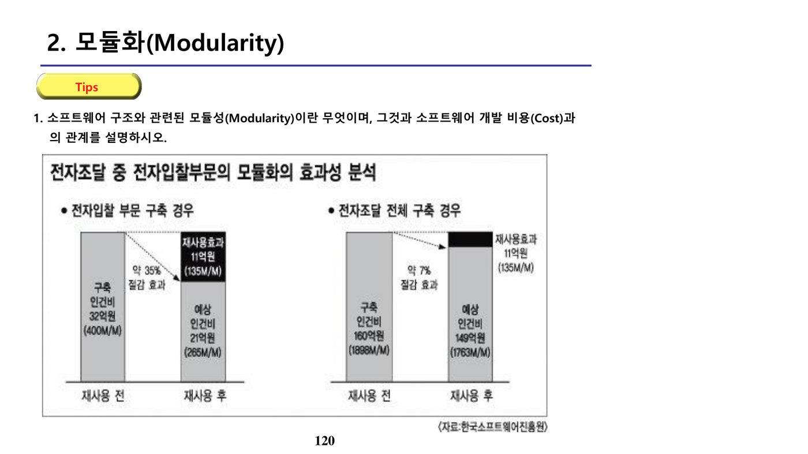
나. 응집도(Cohesion) — 모듈 내부 요소 간의 관련 정도
응집도는 높을수록 좋은 설계로 평가된다. 낮은 응집도에서 높은 응집도 순으로 정리하면 다음과 같다.
| 응집도(낮음→높음) | 설명 |
|---|---|
| 우연적 응집도 | 아무 관련성 없는 작업을 한 모듈에 모아 놓음(제멋대로) |
| 논리적 응집도★ | 유사한 성격의 작업들을 모음. 모듈의 부분이 그룹핑되며(예: if/else 두 파트가 각각 그룹핑), 결과와 무관하게 논리적으로 유사한 것끼리 묶임 |
| 시간적 응집도 | 같은 시간대에 처리되어야 하는 작업들을 모음 |
| 절차적 응집도 | 모듈의 처리 요소들이 서로 관계되며 순서대로 진행(Procedural Cohesion) |
| 통신적 응집도 | 동일한 입출력 자료를 이용해 서로 다른 기능을 수행 |
| 순차적 응집도 | 한 작업의 결과가 다른 모듈의 입력 자료로 사용됨(Sequential Cohesion) |
| 기능적 응집도 | 하나의 기능만 수행하는 모듈(Functional Cohesion, 가장 이상적) |
다. 결합도(Coupling) — 모듈 간의 의존 정도
결합도는 낮을수록 좋은 설계로 평가된다. 강한 결합에서 약한 결합 순으로 정리하면 다음과 같다.
| 결합도(강함→약함) | 설명 |
|---|---|
| 내용 결합도 | 한 모듈이 다른 모듈의 내부 자료나 제어정보를 직접 사용(Content) |
| 공통 결합도 | 많은 모듈이 전역변수(글로벌 변수)를 함께 참조할 때 발생(Common) |
| 제어 결합도★ | 한 모듈이 다른 모듈에 무엇을 해야 하는지에 대한 정보(플래그·제어값)를 넘겨 흐름을 제어(Control Coupling). 정보를 파라미터로 받아 if/else 흐름을 제어하는 경우가 이에 해당하며, 단순 자료 결합도로 오인하지 않도록 주의해야 한다. |
| 외부 결합도 | 모듈이 소프트웨어의 외부 환경과 연관되는 경우(External) |
| 스탬프 결합도 | 두 모듈 사이에 자료구조(data structure) 자체를 교환(Stamp Coupling) |
| 자료 결합도 | 모듈들이 단순 변수를 파라미터로 교환(Data Coupling), 예: 제곱근 계산 함수에 정수 하나를 전달 |
라. 응집도·결합도와 비용의 관계
모듈의 수가 증가할수록 각 모듈의 크기는 작아져 개발비용은 감소하는 경향을 보이지만, 모듈 간 인터페이스 비용은 반대로 증가한다. 따라서 응집도를 높이고 결합도를 낮춰 인터페이스 비용의 증가를 완화하는 것이 모듈 개수 결정의 핵심 원리이다.
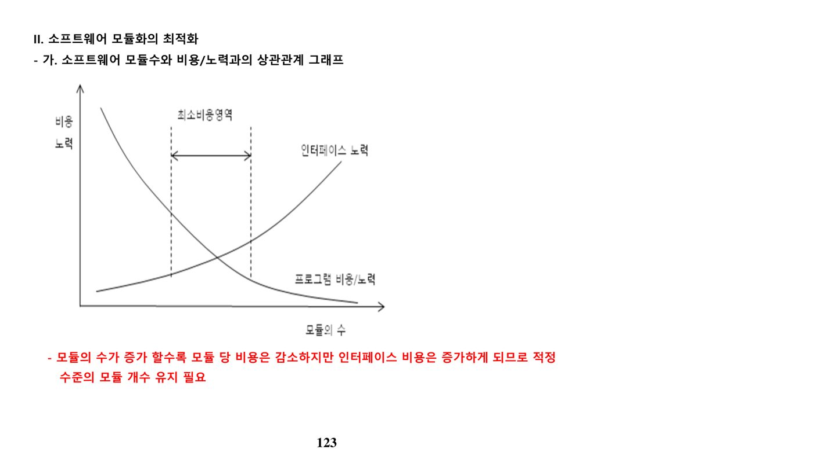
결합도·응집도 관련 문제는 코드에서 파라미터로 흐름 제어 여부를 판단하는 사례형 기출이 많이 출제되며, 세부 문항은 하단 전체 기출·예상문제(Q18~Q22)에서 확인할 수 있다.
6. 소프트웨어 3R(재공학) (원본 p.144-145)
가. 소프트웨어 3R의 정의와 등장 배경
소프트웨어 3R은 레포지토리(Repository)를 기반으로 역공학(Reverse Engineering), 재공학(Reengineering), 재사용(Reuse)을 통해 소프트웨어 생산성을 극대화하는 기법이다. 소프트웨어 위기 극복, 개발 생산성 향상, 유지보수 비용 절감, 변경 요구사항에 대한 신속한 대처의 필요성에서 등장하였다.
나. 소프트웨어 3R의 목표
- 유지보수 오류 및 비용의 축소
- 시스템의 이해·변경·테스트 용이성 확보
- CASE 도구를 활용한 기존 시스템의 유지보수·수정 지원
- 기존 시스템 컴포넌트의 재사용을 통한 소프트웨어 위기 극복
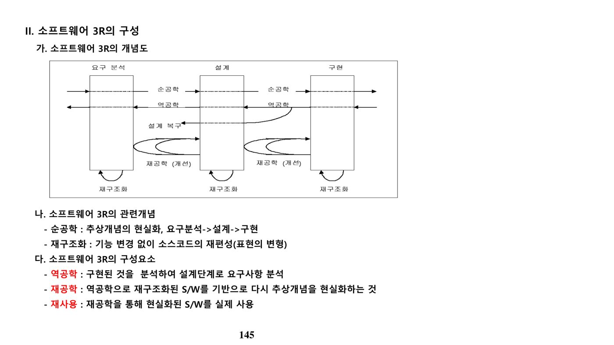
- 순공학(Forward Engineering) — 요구분석 → 설계 → 구현 순서로 진행되는 일반적인 정방향 개발
- 역공학(Reverse Engineering) — 기존 코드·시스템을 분석하여 설계 정보나 명세를 역으로 추출
- 재공학(Reengineering) — 기존 시스템을 분석해 재구성·개선함으로써 유지보수성을 높이는 활동(역공학+순공학의 결합)
- 재사용(Reuse) — 기존에 개발된 컴포넌트·모듈을 새로운 시스템 개발에 다시 활용
다. 관련 서술형 기출문제
1. 소프트웨어 재사용을 위한 방안(구성요소)에 대하여 설명하시오. (조직 71회 2교시)
2. 순공학, 역공학, 순환공학, 동기순환공학, 비동기순환공학에 대해 설명하시오. (조직 77회 1교시)
7. 소프트웨어 유지보수 (원본 p.146-173)
가. 유지보수의 개념과 중요성
소프트웨어 유지보수는 인도된 소프트웨어 제품을 수정하는 활동으로, ISO/IEC 14764는 교정적·적응적·완전적·예방적 유지보수를 국제 표준으로 정의하고 있다. 유지보수 비용은 소프트웨어 전체 생애주기 비용의 70~80%를 차지할 정도로 비중이 크며, 유지보수 요구가 적체될 경우 업무 지연·요구사항 누락·오류 발생 등의 문제가 뒤따른다.
나. Lehman의 소프트웨어 변화 원리
Lehman은 소프트웨어가 요구에 의해 계속 변경되는 특성과 그로 인한 복잡성 증가, 조직·품질 측면의 변화 추세를 8가지 원리로 제시하였다. 이는 유지보수, 변경관리, 형상관리, 품질통제의 중요 모델로 활용된다.
| 원리 | 세부 내용 |
|---|---|
| 계속적 변경(Continuing Change) | 소프트웨어는 계속 진화하며 요구사항에 의해 지속적으로 변경됨. 다시 만드는 것보다 경제적인 한 계속 변화 |
| 복잡도 증가(Increasing Complexity) | 변경이 가해질수록 구조는 복잡해지며, 별도로 단순화 작업을 하지 않는 한 복잡도는 계속 증가 |
| 대규모 프로그램 진화(Program Evolution) | 프로그램별로 변경되는 고유한 패턴·추세가 있으며, 복잡성을 낮추려는 인간 의지의 개입이 필요 |
| 조직의 안정화(Organizational Stability) | 조직의 생산성은 조직 변화에 민감하지 않으며, 개인 생산성 최적화가 팀 생산성 최적화의 필수조건은 아님 |
| 친근성의 유지(Conservation of Familiarity) | 소프트웨어 각 버전의 변화 정도는 일정하며 규칙적인 추이를 보이므로 계측 가능 |
| 지속적 성장(Continuing Growth, 1991년 추가) | 소프트웨어의 생애주기 내내 사용자 만족을 유지하기 위해 기능이 계속 증가 |
| 품질 저하(Declining Quality, 1996년 추가) | 엄격하게 관리·운영되지 않거나 환경 변화에 적응하지 않으면 품질은 저하됨 |
| 피드백 시스템(Feedback System, 1996년 추가) | 진화 프로세스는 다중레벨·다중루프·Multi-Agent 피드백 시스템으로 구성되어야 제품 개선을 달성 |
이 원리는 조직(People) — 전문화된 유지보수 조직, 1선/2선/3선 체계, 변경통제위원회(CAB)·형상통제위원회(CCB) 구성, 프로세스(Process) — 요구관리·변경관리 프로세스, 변경 영향도 분석, 시스템(System) — Baseline·CMDB·형상관리시스템 구성이라는 세 축의 안정화 방안으로 실무에 적용된다.
다. 유지보수의 분류
| 분류 기준 | 종류 | 설명 |
|---|---|---|
| 시점에 의한 분류 | 계획 유지보수 | 주기적인 유지보수 |
| 예방 유지보수 | 미리 예방 차원에서 수행 | |
| 응급 유지보수 | 긴급한 경우 수행, 사후 승인 필요 | |
| 지연 유지보수 | 변경된 부분에 대한 추후 지원 | |
| 대상에 의한 분류 | 데이터 유지보수 | 데이터 변환(Conversion) 등 처리 |
| 프로그램 유지보수 | 프로그램 변경 및 오류 처리 | |
| 문서 유지보수 | 문서 표준 변경 등 | |
| 시스템 유지보수 | 시스템 변경 및 장애 처리 | |
| 원인에 의한 분류(수완예적) | 수정 유지보수 | 오류·결함의 수정(Corrective) |
| 완전 유지보수 | 불완전 부분의 표준화 적용(Perfective) | |
| 예방 유지보수 | 정기적인 유지보수(Preventive) | |
| 적응 유지보수 | 변화·갱신의 적용(Adaptive/Porting) |
라. 유지보수의 4대 유형과 특징
| 유형 | 설명 | 특징 |
|---|---|---|
| 수정적 유지보수(Corrective) | 프로그램 오류로 인한 SW 오류 수정 | 하자 유지보수, 처리·수행·구현 오류 |
| 적응적 유지보수(Adaptive) | 프로그램 환경 변화에 대한 소프트웨어의 적응 | 이식(porting) 개념, H/W 또는 S/W 변화 |
| 완전적 유지보수(Perfective) | 프로그램 특성 추가·변경 및 유지보수성 향상 | 수행력 향상, 신규 기능 추가 |
| 예방적 유지보수(Preventive) | 예측되는 오류를 선점 처리 | 발생 전 수정 |
마. 유지보수 프로세스의 주요 활동
| 단계 | 주요 활동 | 활동 주체 |
|---|---|---|
| 요청 | MRF(Modification Request Form) 작성, CR(Change Request) 작성 | 사용자 |
| 분석 | 유지보수 유형 분류·심각성 판단, 내용·영향도 분석, 우선순위 결정 | 분석가 |
| 승인 | 분석 내용에 따른 유지보수 여부 승인, 실행 승인 | 유지보수 관리위원회 |
| 실행 | 유지보수 실행, 소프트웨어 변경 보고서(SCR) 작성, 관련 문서 변경 | 유지보수자 |
바. 관련 서술형 기출문제
1. 50주년이 되는 제조업 전산실의 정보관리 담당자로서 'Alien Code'를 유지관리하기 위한 지침을 마련하시오. (관리 75회 4교시)
2. Lehman의 소프트웨어 변화에 대한 원리 5가지와 소프트웨어 유지보수의 3가지 형태(수정적·적응적·완전적)를 설명하시오. (조직 75회 2교시)
3. 소프트웨어 유지보수의 4가지 유형과 개발 업무와의 차이점에 대하여 설명하시오. (정보관리 102회 1교시)
8. 리팩토링 (원본 p.159-173)
가. 리팩토링의 목적
| 목적 | 설명 |
|---|---|
| 소프트웨어 디자인 개선 | 설계 의도와 구현 코드의 일관성을 유지해 설계 변경을 용이하게 함 |
| 소프트웨어 이해도 향상 | 이해하기 쉬운 코드로 개발자 작업시간 단축 |
| 오류 발견 용이성 확보 | 소스 구조를 명확히 해 버그 원인을 쉽게 발견 |
| 전체 개발 생산성 증대 | "좋은 디자인 유지 → 개발자 이해 향상 → 오류 감소"의 선순환으로 개발 가속화 |
나. 리팩토링 적용 시점
| 시점 | 적용 사유 |
|---|---|
| 삼진 규칙(Rule of Three) | 비슷한 중복이 세 번째 나타날 때 수행하는 기본 가이드 |
| 기능 추가 시 | 기존 코드 구조 개선으로 이해도를 높여 기능 추가를 쉽고 빠르게 수행 |
| 버그 수정 시 | 수정 전 더 깊은 이해를 제공해 버그 수정을 용이하게 함 |
| 코드 리뷰 중 | 코드의 명확성을 유지하고 더 나은 설계 아이디어를 제안, 품질 향상 |
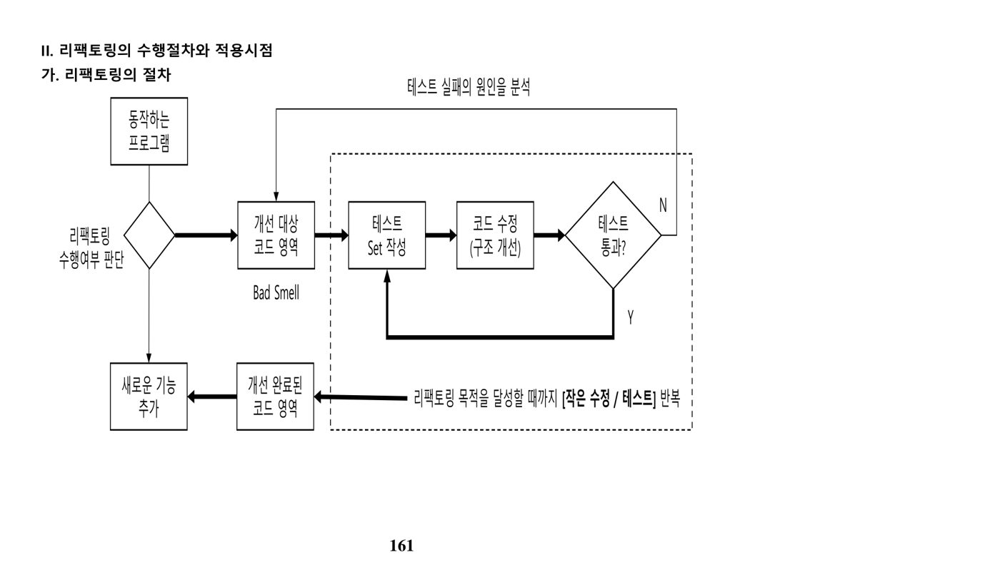
다. 코드 냄새(Bad Smell)와 대응 리팩토링 기법
| 영문 | 한글 | 설명 및 해결 기법 |
|---|---|---|
| Duplicated Code | 중복된 코드 | 동일 클래스의 2개 이상 메소드에 중복 코드 존재 → Extract Method로 해결 |
| Long Method | 너무 긴 메소드 | 메소드가 지나치게 길다 → Extract Method로 해결 |
| Large Class | 거대한 클래스 | 클래스의 필드·메소드가 지나치게 많다 → Extract Class로 해결 |
| Long Parameter List | 너무 많은 인수 | 메소드에 전달하는 파라미터가 지나치게 많다 → Introduce Parameter Object로 해결 |
| Divergent Change(확산적 변경) | 변경의 발산 | 사양 변경 시 수정할 곳이 여기저기 흩어져 하나의 클래스에 영향을 줌 |
| Shotgun Surgery(산탄총 수술) | 변경의 분산 | 한 클래스를 수정하면 다른 클래스도 여기저기 수정해야 함 |
| Middle Man | 미들 맨 | 클래스 인터페이스 대부분이 다른 클래스로의 위임(delegation)을 남용하는 상태 |
라. 주요 리팩토링 기법
| 기법 | 설명 |
|---|---|
| Inline Method | 메서드 몸체가 이름만큼 명확할 때 호출하는 곳에 몸체를 삽입하고 메서드를 삭제 |
| Extract Method | 목적이 잘 드러나도록 코드 조각을 별도의 메소드로 추출. Duplicated Code에 주로 적용 |
| Extract Interface | 여러 클래스가 사용하는 인터페이스의 공통 부분을 추출해 통합 |
| Move Method | 메소드가 자신이 정의된 클래스보다 다른 클래스의 기능을 더 많이 사용할 때, 가장 많이 사용하는 클래스로 메소드를 옮기고 원래 메소드는 위임으로 대체하거나 제거 |
| Introduce Parameter Object | 여러 파라미터가 항상 함께 사용될 때 이를 객체(Object)로 묶어서 사용 |
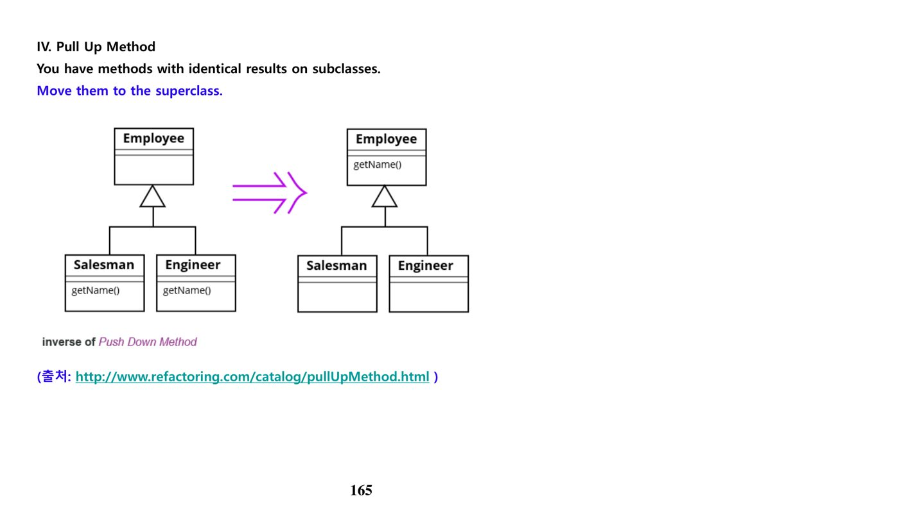
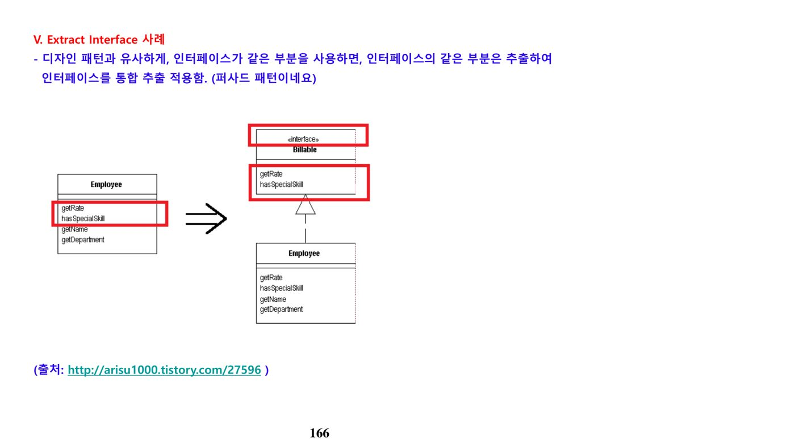
마. 관련 서술형 기출문제
은행에서 계좌의 당좌대월액을 계산하는 프로그램에 새로운 계좌 타입이 추가될 예정이며, 각 타입별 계산 규칙이 필요해 메소드 overdraftCharge()를 클래스 AccountType으로 옮기려 한다. 리팩토링 기법 중 하나인 Move Method의 개념과 절차를 설명하고, 이를 활용해 리팩토링한 코드를 작성하시오. (정보관리 101회 3교시)
9. 신뢰도·가용성과 Outsourcing (원본 p.174-180)
가. 신뢰도 측정 지표
| 지표 | 설명 | 예시 |
|---|---|---|
| MTTF(Mean Time To Failure) | 고장 수리 후 다음 고장이 발생하기까지의 평균 시간 | 1달 |
| MTBF(Mean Time Between Failure) | 한 고장에서 다음 고장까지의 평균 시간(= MTTF + MTTR) | 1달 1일 |
| MTTR(Mean Time To Repair) | 고장 발생 후 수리 완료까지의 평균 복구 시간 | 1일 |
나. 신뢰성 산정 사례
소프트웨어가 평균적으로 2일에 1개의 오류가 발생한다고 할 때, 3일 동안 오류 없이 가동될 신뢰성은 하루 단위 무고장 확률(0.5)을 3일 연속 곱한 값으로 계산한다 — 0.5 × 0.5 × 0.5 = 0.125. 즉 3일 연속 무고장 확률은 12.5%이다.
다. Outsourcing 관련 고려사항
| 구분 | 설명 |
|---|---|
| 고장 원인 분석 | 고장의 원인을 분석·예측해 해결 방안을 모색 |
| 가용도 기준 | SLA(Service Level Agreement)의 가용도 측정 기준을 설정 |
| 설계 품질 | 제품 설계 및 개발에 신뢰도 지표를 반영 |
| 제품 선정 | 목표 가용도를 만족하는 제품을 선정 |
| FT·HA 관점 | Fault Tolerance, High Availability 구성의 가용성을 점검 |
신뢰도 측정 기준(가용도·SLA 포함)과 제품 선정 기준(정확한 측정을 통한 제품 평가·선정·설계 반영)은 아웃소싱 계약 시 반드시 명문화해야 하는 핵심 항목이다.
라. 관련 서술형 기출문제
MTTF(Mean Time To Failure)와 MTBF(Mean Time Between Failure)를 설명하시오. (출제 예상문제)
📚 전체 기출·예상문제 (30문항) — 원문 수록
본 강좌 원본 PDF에 수록된 기출·예상문제를 빠짐없이 원문 그대로 정리했습니다. 정답·해설은 강의 원문 기준입니다.